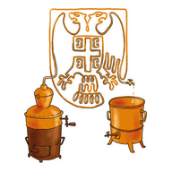

RakiJA
Pomoćnik za domaću rakiju
RakiJA 1.0

Pomoćnik za domaću rakiju
RakiJA 1.0
Indikator je baždaren na 20 °C.
Vrenje je završeno kada je stvarna vrijednost u intervalu za to voće.
Mjeri svaka 2–3 dana — kad se vrijednost ne mijenja, vrenje je gotovo.
Za svaki 1 °C iznad 20 °C dodaje se 0,2 °Oe, a za svaki 1 °C ispod 20 °C oduzima se 0,2 °Oe (uputstvo proizvođača indikatora).
| Temperatura | Korekcija | Stvarna vrijednost |
|---|